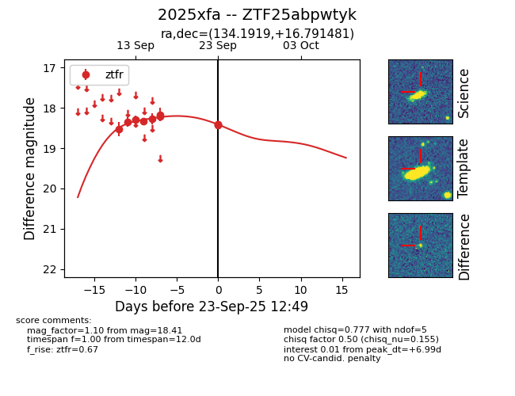
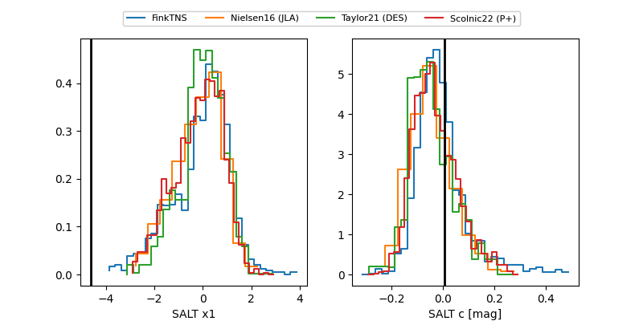

FINK: ZTF25abpwtyk
Lasair: ZTF25abpwtyk
ALeRCE: ZTF25abpwtyk
TNS: 2025xfa
YSE: 2025xfa
ZTF25abpwtyk (ztf,fink)
2025xfa (tns,yse)
equatorial (ra, dec) = (134.1919,+16.79148)
galactic (l, b) = (210.8235,+35.08514)


last ztfr=18.41
10 ztfr detections